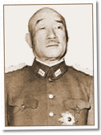

|
j
a v a s c r i p t |
February 26, 1944
Tribune: "6,500 Nippon Heroes Make Gallant Charge.... Superior enemy force attacked Kwajalein, Luot." Daihon-ei, at 1600 yesterday, said the 4,500 garrison plus 2,000 civilian employees commanded by Rear Admiral Michiguchi Yamada (Luot) and Rear Admiral Monzo Akiyama (Kwajalein) met their deaths after the landings on February 1. The Japanese, according to the announcement, lasted until February 6. American losses aren't mentioned. The Americans admitted 282 killed, 80 missing and 1,000 wounded.

Shigetaro Sugiyama
"Navy Minister Voices Nippon's Resolve to defend Her Empire." It's Shigetaro Shimada and he has several instances now to point to Japanese heroic defenses to the last man at Attu, Kiska, Tarawa, Makin, Luot and Kwajalein — Eniwetok is not mentioned yet. Johnny Harris is back at Fort Santiago — his brothers too. They've been accused of listening to the radio and distributing the news. Hans Menzi tells me the day of fooling around is past and it's utterly foolish to continue listening to the radio. |
|
|
|
|